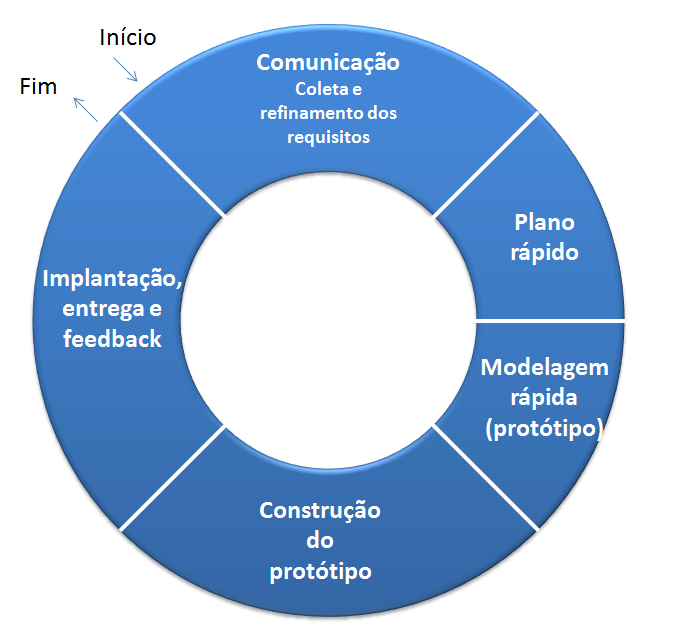
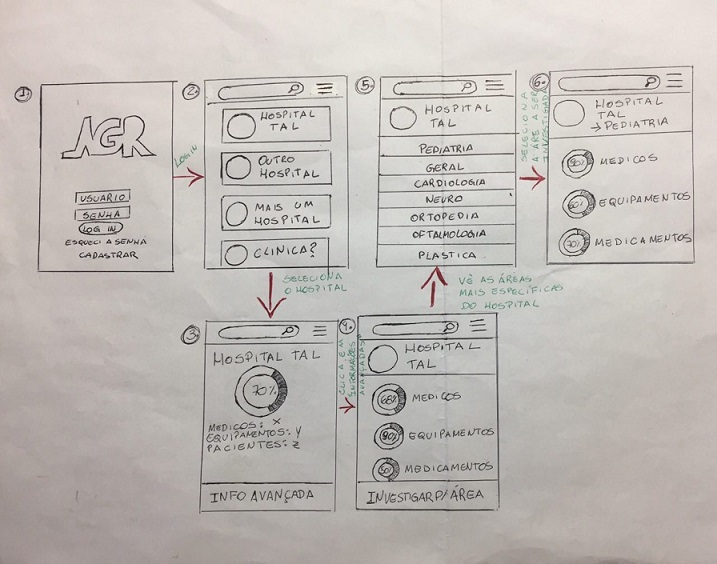

- Passos a serem seguidos:
- 1 - Obter Requisitos
- 2 - Elaborar Projeto Rápido
- 3 - Construir Protótipo
- 4 - Avaliação
- 5 - Refinamento do Protótipo
Método de desenvolvimento por Prototipação
- Este modelo é recomendado quando o cliente define um conjunto de objetivos gerais para o software, mas não identifica detalhadamente requisitos de entrada, processamento ou saída, ou mesmo, quando o desenvolvedor não está seguro sobre a eficiência de um algoritmo, da adaptabilidade de um sistema operacional ou da forma que a interação homem/máquina deve assumir.
- O objetivo é entender os requisitos do usuário e, assim, obter uma melhor definição dos requisitos do sistema.
- Possibilita que o desenvolvedor crie um modelo (protótipo)do software que deve ser construído.
- Apropriado para quando o cliente não definiu detalhadamente os requisitos.
O paradigma de prototipagem, começa com a comunicação. O engenheiro de software e o cliente encontram-se e definem os objetivos gerais do software, identificando as necessidades conhecidas e verificam as áreas que necessitam de mais definições. Uma iteração de prototipagem é planejada rapidamente e a modelagem ocorre. O projeto rápido concentra-se na representação daqueles aspectos do software que estarão visíveis para o cliente (exemplo: layout da interface, entre outros). O projeto rápido leva à construção de um protótipo, que é implantado e depois avaliado pelo cliente. O feedback é usado para refinar os requisitos do software. A iteração ocorre à medida que o protótipo é ajustado para satisfazer às necessidades do cliente e, ao mesmo tempo, permite ao desenvolvedor entender melhor o que precisa ser feito.

- Há dois tipos de prototipação:
- Protótipo de Alta Qualidade
- Protótipo de Baixa Qualidade
Idealmente, o protótipo serve como um mecanismo para identificação dos requisitos de software. Brooks (1975) defende que o protótipo deve ser descartado pelos seguintes motivos:
1 - Obter Requisitos:
- O Desenvolvedor e cliente definem os objetivos gerais do software, identificam quais requisitos são conhecidos e as áreas que necessitam de definições adicionais.
2 - Elaborar Projeto Rápido:
- Representação dos aspectos do software que são visíveis ao usuário(abordagens de entrada e formato de saídas)
3 - Construir Protótipo:
- Incrementação rápida do projeto com protótipos para o usuário verificar como seria o produto final.
4 - Avaliação:
- Cliente, juntamente com o desenvolvedor, avaliam o protótipo feito.
5 - Refinamento do Protótipo:
- Após avaliar o protótipo, cliente e desenvolvedor refinam os requisitos do software a ser desenvolvido
Protótipo de Alta Qualidade:
- Uma abordagem para o desenvolvimento do sistema, onde um protótipo inicial é produzido e refinado através de vários estágios até atingir o sistema final.
- O Objetivo da prototipação evolucionária é fornecer aos usuários finais um sistema funcionando.
- O desenvolvimento começa com aqueles requisitos que são melhores compreendidos.
- Apoiam a avaliação de todos os detalhes de um design
- Necessita de mais tempo e mais recursos para serem construídos
Protótipo de Baixa Qualidade:
- Um protótipo o qual é usualmente uma implementação prática do sistema é produzida para ajudar a levantar os problemas com os requisitos e depois descartado. O sistema é então desenvolvido usando algum outro processo de desenvolvimento.
- O Objetivo da prototipação descartável é validar ou derivar os requisitos do sistema. O processo de prototipação começa com aqueles requisitos que não são bem compreendidos.
- Não apoiam a avaliação de todos os detalhes de um design, com a interação da interface com o usuário, layout e formato do produto, representações dinâmicas e tempo de respostas do sistemas.
- Apoiam a avaliação do modelo conceitual usado no design.
- Necessita de pouco tempo e de menos recursos para ser construídos.
- Pode ser feito em papéis, a mão.
